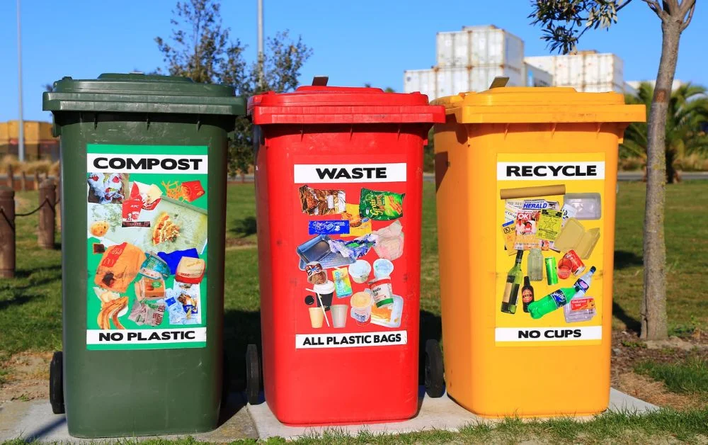

In today’s world, technology evolves rapidly,
leading to an accumulation of old, outdated electronic devices. From phones and laptops
to refrigerators and TVs, we all have electronics that are no longer useful.
But before you toss them in the trash, it’s important to dispose of them safely
to protect both the environment and your privacy.
Don’t Trash It—Recycle It!
Here’s a step-by-step guide on how to responsibly dispose of old electronics.
- Backup and Erase Data
- Before parting with any electronic device that stores personal information (such as smartphones, laptops, tablets, and hard drives), make sure to backup your data. Store important files on an external hard drive, cloud storage, or another device to ensure you don’t lose any important documents, photos, or contacts.
- Check for Manufacturer Takeback Programs
- Many electronics manufacturers and retailers offer takeback programs where they accept old electronics for recycling or refurbishment. Brands like Apple, Dell, and Samsung have recycling programs that may also offer discounts on future purchases in return.
- Consider Donating or Selling Your Old Electronics
- If your device is still in good working condition but no longer meets your needs, consider donating it to a charitable organization or selling it online. Donating or selling electronics extends their life and reduces the need for new manufacturing.
About Me
Proper Electronics Recycling Practices.Don’t Trash It—Recycle It!
Popular Posts

